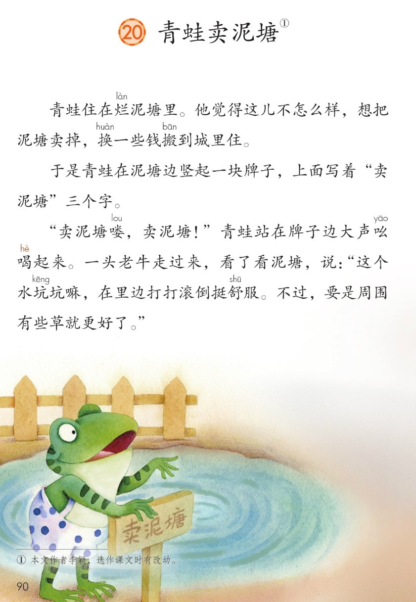
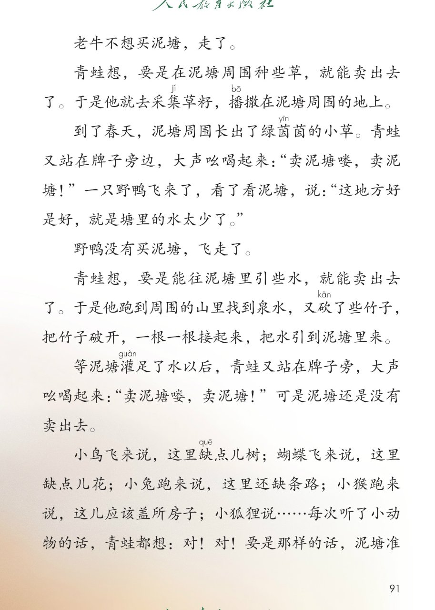
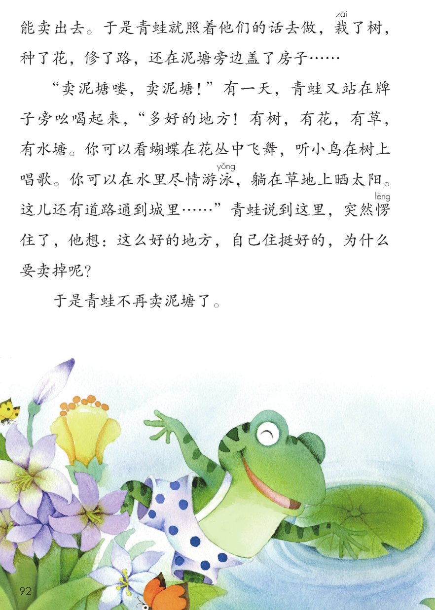

×
🔊 手机听不到声音怎么办？
① 先把手机
媒体音量调大 ，确认没开静音、没连蓝牙耳机；在微信里打开的，点右上角「⋯ → 用浏览器打开」。
② 还是没声音？到应用商店免费下载
Microsoft Edge 浏览器 （它自带朗读发声），用它打开本页面就能出声。
③ 换了 Edge 仍然没声音，说明这部手机的
硬件/系统不支持 网页朗读（多为老旧机型）；近几年买的新手机一般都能正常播放。
→ 打开声音自检
🐸 第 20 课《青蛙卖泥塘》· 有声图文带读
统编版语文 · 第七单元·阅读 · 课本 第 90~93 页 · 作者：李晓冰
课文 12 段 · 共 25 句
会认字 15
会写字 8
听写词 10
近义词 4 组
深入理解 8 题
本课本领 朗读吆喝·勤劳改变
🎧 五步学（可随时点任意一句、一个字、一个词单独听）： ① 听读课文 ——有趣的故事，一句一句读，读到哪一句哪一句发光；开「跟读」后读完一句留时间让你自己读。② 学字词 ——15 个会认字、8 个会写字（含书写提示），点一个读一个。③ 词语·听写·造句 ——先读故事词语积累，再听写 10 个词（读两遍→你写→报答案→听示范句），最后听 4 组近义词辨析。④ 深入理解 ——8 道题（认知 / 理解 / 运用 / 拓展），开放题答案不唯一，先想后看。⑤ 分节朗读·想象画面 ——按五步看泥塘怎么变好，再听六位朗读者分组读这个故事。
📚 第七单元·阅读（本课定位）： 第18课《大象的耳朵》 → 第19课《蜘蛛开店》 → 第20课《青蛙卖泥塘》 → 第21课《小毛虫》 → 语文园地七
点段前的 ①~⑫ 听整段
🔁 跟读模式：关
👁 隐藏注音（自测用）
注音只标本课要认、要写的字和课本明确标了音的字，读音来自课本第 93 页生字表
🎤 朗读要求（老师标准） 烂 读第四声，换 读第四声，搬 读第一声，喝 在吆喝里读得轻短，坑 读第一声，舒 读第一声，集 读第二声，播 读第一声，茵 读第一声，砍 读第三声，灌 读第四声，缺 读第一声，栽 读第一声，泳 读第三声，愣 读第四声；不添字、不漏字 ：逗号停得短，句号停得长，一句一句读清楚；读出吆喝的语气 ：卖泥塘喽，卖泥塘，要读得响亮，像真的在叫卖；读出人物语气 ：老牛、野鸭的话读得慢条斯理，多好的地方读出夸赞又自豪，结尾问句读出恍然大悟。
①
青蛙住在烂làn 泥塘里。
他觉得这儿不怎么样，想把泥塘卖掉，换huàn 一些钱搬bān 到城里住。
②
于是青蛙在泥塘边竖起一块牌子，上面写着“卖泥塘”三个字。
③
“卖泥塘喽，卖泥塘！”青蛙站在牌子边大声吆喝hē 起来。
一头老牛走过来，看了看泥塘，说：“这个水坑kēng 坑kēng 嘛，在里面打打滚倒挺舒shū 服。不过，要是周围有些草就更好了。”
④
老牛不想买泥塘，走了。
⑤
青蛙想，要是在泥塘周围种些草，就能卖出去了。
于是他就去采集jí 草籽，播bō 撒在泥塘周围的地上。
⑥
到了春天，泥塘周围长出了绿茵yīn 茵yīn 的小草。
青蛙又站在牌子旁边，大声吆喝hē 起来：“卖泥塘喽，卖泥塘！”
一只野鸭飞来了，看了看泥塘，说：“这地方好是好，就是塘里的水太少了。”
⑦
野鸭没有买泥塘，飞走了。
⑧
青蛙想，要是能往泥塘里引些水，就能卖出去了。
于是他跑到周围的山里找到泉水，又砍kǎn 了些竹子，把竹子破开，一根一根接起来，把水引到泥塘里来。
⑨
等泥塘灌guàn 足了水以后，青蛙又站在牌子旁，大声吆喝hē 起来：“卖泥塘喽，卖泥塘！”
可是泥塘还是没有卖出去。
⑩
小鸟飞来说，这里缺quē 点儿树；蝴蝶飞来说，这里缺quē 点儿花；小兔跑来说，这里还缺quē 条路；小猴跑来说，这儿应该盖所房子；小狐狸说……
每次听了小动物的话，青蛙都想：对！对！要是那样的话，泥塘准能卖出去。
于是青蛙就照着他们的话去做，栽zāi 了树，种了花，修了路，还在泥塘旁边盖了房子……
⑪
“卖泥塘喽，卖泥塘！”有一天，青蛙又站在牌子旁吆喝hē 起来，“多好的地方！有树，有花，有草，有水塘。”
你可以看蝴蝶在花丛中飞舞，听小鸟在树上唱歌。
你可以在水里尽情游泳yǒng ，躺在草地上晒太阳。
这儿还有道路通到城里……
青蛙说到这里，突然愣lèng 住了，他想：这么好的地方，自己住挺好的，为什么要卖掉呢？
⑫
于是青蛙不再卖泥塘了。
🤔 想一想（点我可跳过）
点一张图，听读整页

第 90 页 · 课文第 1~4 段

第 91 页 · 课文第 5~9 段

第 92 页 · 课文第 10~12 段
📖 人教版《语文》二年级下册 · 课本第 90~92 页；第 93 页为生字表与课后题 · 图片仅供个人学习，版权归人民教育出版社所有
点一个字，听读音、词语和课文里的句子
结构、部首、笔画与书写提示为通用规范，供参考，以教材和老师的指导为准
蛙
wā
青蛙 · 牛蛙
12 画 · 左右（虫）
虫字旁写窄，圭字写稳
卖
mài
卖泥塘 · 买卖
8 画 · 上下（十）
十字头写小，买字写稳
搬
bān
搬家 · 搬运
13 画 · 左右（扌）
提手旁写窄，般字写稳
倒
dào
倒水 · 倒过来
10 画 · 左右（亻）
单人旁写窄，到位写稳
泉
quán
泉水 · 温泉
9 画 · 上下（水）
上白下水，竖钩写正
砍
kǎn
砍竹子 · 砍柴
9 画 · 左右（石）
石字旁写窄，欠字写稳
破
pò
破开 · 破坏
10 画 · 左右（石）
石字旁写窄，皮字写稳
泳
yǒng
游泳 · 泳衣
8 画 · 左右（氵）
三点水写窄，永字写正
点一行，听词语和课后题的答案
📖 课后题（课本第 93 页照录） ：① 朗读课文。分角色演一演这个故事。 ② 说一说青蛙为卖泥塘做了哪些事，最后为什么又不卖泥塘了。 ③ 选做：青蛙最后吆喝了些什么？如果向同学推荐一样东西，如一本书、一种文具，你会说些什么？
烂泥塘 烂泥塘 破烂
吆喝 吆喝 叫卖
绿茵茵 绿茵茵 绿油油
尽情 尽情 尽量
读两遍 → 你在纸上写 → 报答案 → 听示范句
准备听写 · 共 10 个词
○ ○ ○
点下面的「开始听写」，听到一个词就写一个词。
▶ 开始听写
🔁 再读一遍
👁 看答案
点词听读，点句子听示范句，再自己说一句
1 青蛙 会写字 · 蛙
示范句：青蛙住在烂泥塘里。
✏️ 我也能说：青蛙在做什么
2 卖泥塘 会写字 · 卖
示范句：青蛙竖起牌子卖泥塘。
✏️ 我也能说：谁卖什么
3 搬家 会写字 · 搬
示范句：青蛙想搬到城里住。
✏️ 我也能说：谁搬家了
4 倒水 会写字 · 倒
示范句：把杯子倒过来，水也不会往下流。
✏️ 我也能说：倒什么
5 泉水 会写字 · 泉
示范句：他跑到山里找到泉水。
✏️ 我也能说：什么样的泉水
6 砍竹子 会写字 · 砍
示范句：青蛙砍了些竹子接水管。
✏️ 我也能说：砍什么
7 破开 会写字 · 破
示范句：把竹子破开，一根一根接起来。
✏️ 我也能说：把什么破开
8 游泳 会写字 · 泳
示范句：你可以在水里尽情游泳。
✏️ 我也能说：谁在哪里游泳
9 泥塘 课文词 · 塘
示范句：青蛙的泥塘变得美美的。
✏️ 我也能说：什么样的泥塘
10 吆喝 课文词 · 吆
示范句：青蛙大声吆喝起来。
✏️ 我也能说：谁吆喝什么
相同点 / 不一样在哪 / 各造一句
舒服 — 舒适
相同：都表示身心轻松、好受 。
不一样：舒服 更口语，常说身体、日子；舒适 更书面，常写环境、生活。
舒服：在里面打打滚倒挺舒服。
突然 — 忽然
相同：都表示发生得很快、没想到 。
不一样：突然 强调情况来得意外；忽然 表示动作、变化很快发生。
突然：青蛙突然愣住了。
准能 — 一定能
相同：都表示有把握、肯定能做到 。
不一样：准能 更口语、有信心；一定能 语气更肯定、完整。
准能：泥塘准能卖出去。
周围 — 四周
相同：都表示围绕着的那个圈儿 。
不一样：周围 指中心周围的各处；四周 强调四个方向、整个圈子。
周围：在泥塘周围种些草。
要是…就… 要是在泥塘周围种些草，就能卖出去了
对！对！（连声答应） 每次听了小动物的话，青蛙都想：对！对！
有…有…（一样一样夸） 有树，有花，有草，有水塘
缺点儿（儿化） 这里缺点儿树；这里缺点儿花
标「答案不唯一」的题，说得有道理都对
认知 青蛙为卖泥塘做了哪些事？看解析
🤔 想一想
解析：
种草、引水
栽树、种花、修路、盖房子
泥塘一天比一天好
认知 哪些小动物来看过泥塘？他们是怎么说的？看解析
🤔 想一想
解析：
要是周围有些草就更好了
塘里的水太少了
缺树、缺花、缺路、缺房子
理解 青蛙为什么最后不卖泥塘了？看解析
🤔 想一想
解析：
有树有花有草有水塘
发现哪儿都是好地方
自己住挺好，不卖了
理解 泥塘是怎么一步一步变美的？看解析
🤔 想一想
解析：
种草，长出绿茵茵的小草
引泉水，灌足了水
栽树种花修路盖房子
理解 老牛和野鸭没有买泥塘，你觉得他们的建议对青蛙有什么用？看解析
🤔 想一想
解析：
让青蛙种了草
让青蛙引了水
虚心听建议，动手改变
运用 用“要是……就……”说一句话。看解析
🤔 想一想
解析：
要是…就…
天气、学习、游戏都可以
🌈 答案不唯一，说得有道理都对
运用 学着青蛙吆喝的样子，用“多好的地方！有……”夸一夸我们的教室或校园。看解析
🤔 想一想
解析：
多好的地方！有…有…
教室、校园、家都可以
🌈 答案不唯一，说得有道理都对
拓展 你觉得青蛙是一只怎样的青蛙？看解析
🤔 想一想
解析：
种草引水样样动手
谁的建议都听
🌈 答案不唯一，说得有道理都对
点一步，听这一步
💬 想象支架：先 想烂泥塘竖牌 → 再 想老牛要草就种草 → 接着 想野鸭要水就引水 → 然后 想照大家的建议栽树种花修路盖房 → 最后 想泥塘美美的，青蛙不卖了。
点一张卡，听这一节的句子
🌈 老牛来看泥塘
老牛来看泥塘
💬 吆喝响亮，老牛慢条斯理
🌈 种草·野鸭来看
种草·野鸭来看
💬 小草绿茵茵，野鸭惋惜
🌈 引水·还没卖出
引水·还没卖出
💬 长句读连贯，没卖出读得无奈
🌈 照着大家的话做
照着大家的话做
💬 对对读得痛快，做事勤快
🌈 泥塘美美的·不卖了
泥塘美美的·不卖了
💬 吆喝自豪，结尾恍然大悟